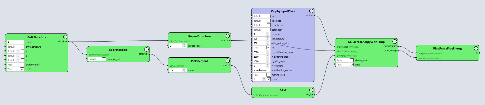
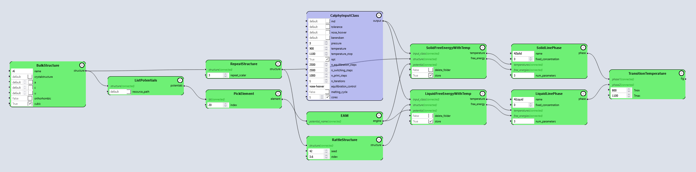
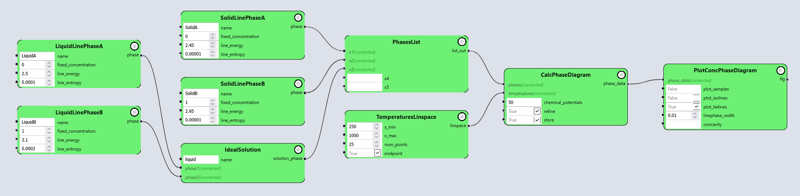
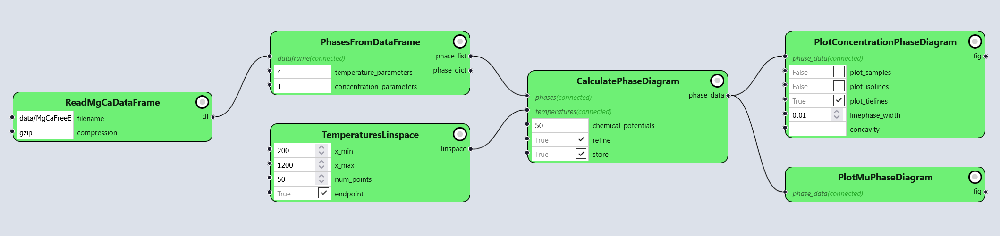

Calculation of phase diagrams #
from core import Workflow
from core.gui import PyironFlow
Calculate free energy with temperature for solid#
Task
By now we have seen how the GUI works. We try to calculate the free energy of an Al FCC structure.
Helpful nodes (can be searched for in the Node library):
atomistic -> structure -> build -> Bulkto create a structure. Make sure to checkcubicbox.atomistic -> structure -> transform -> Repeatto create a supercell. A 3x3x3 cell should work for this example.atomistic -> calculator -> calphy -> InputClassto set inputs for free energy calculation.atomistic -> calculator -> calphy -> SolidFreeEnergyWithTempfor calculating the free energy.atomistic -> engine -> lammps -> ListPotentialsto get the list of potentials for LAMMPS, for this specific structure.basic -> list-> PickElementto pick a potential from the list of potentials. Here, we choose the2009--Mendelev-M-I--Al-Mg--LAMMPS--ipr1potential for quick calculations.atomistic -> engine -> eam -> EAMto provide the potential to the calphy calculations.atomistic -> calculator -> calphy -> PlotFreeEnergyfor a free energy plot.
wf_free_energy_unary = Workflow("Free_Energy_Unary")
wf_free_energy_unary_solution = Workflow("Free_Energy_Unary_Solution")
workflow_path = "pyiron_core_data/workflows"
pf_free_energy_unary = PyironFlow(
wf_list=[wf_free_energy_unary, wf_free_energy_unary_solution],
nodes_path="pyiron_nodes",
workflow_path=workflow_path
)
pf_free_energy_unary.gui
A preview of the solution:

Calculate melting temperature #
Task
Now we take a step forward and calculate the melting temperature. The melting temperature is the temperature at which the free energies of the solid and liquid phases are equal.
In addition to the nodes above, the following would be useful:
The steps for solid free energy are same as above, but with good temperature window to be set in the
InputClasswould be 900-1100 K.For liquid, we need to create a structure first. There are two ways to do it:
either check the
melting_cyclebox inInputClassor use
atomistic -> structure -> transform -> Rattlewithstdevof approximately 0.6 to create a structure, similar to liquid.
atomistic -> calculator -> calphy -> LiquidFreeEnergyWithTempfor calculating the free energy of the liquid.atomistic -> thermodynamics -> calphy -> LiquidFreeEnergyWithTempfor calculating the free energy of the liquid phaseA good temperature window to be set in the
InputClasswould be 800-1100 K.thermodynamics -> landau -> TemperatureDependentLinePhaseto store the free energies and temperatures in an object for future use.thermodynamics -> landau -> TransitionTemperatureto calculate the transition temperature between the solid and the liquid, and to plot the free energies.
wf_transition_temp_unary = Workflow("Transition_Temp_Unary")
wf_transition_temp_unary_solution = Workflow("Transition_Temp_Unary_Solution")
workflow_path = "pyiron_core_data/workflows"
pf_transition_temp_unary = PyironFlow(
wf_list=[wf_transition_temp_unary, wf_transition_temp_unary_solution],
nodes_path="pyiron_nodes",
workflow_path=workflow_path
)
pf_transition_temp_unary.gui
A preview of the solution:

Calculating a binary phase diagram #
Now that we have seen the thermodynamic functions in Landau, we will make a simple eutectic binary phase diagram with Landau.
Instead of calculating free energies for a specific structure, we use model phases, whose energies and entropies can be set manually.
We input the internal energy \(U\) and the entropy \(S\), and the free energy for a temperature \(T\) gets computed using standard the equation below:
wf_phase_diagram_binary = Workflow("Phase_Diagram_Binary")
wf_phase_diagram_binary_solution = Workflow("Phase_Diagram_Binary_Solution")
workflow_path = "pyiron_core_data/workflows"
pf_phase_diagram_binary = PyironFlow(
wf_list=[wf_phase_diagram_binary, wf_phase_diagram_binary_solution],
nodes_path="pyiron_nodes",
workflow_path=workflow_path
)
pf_phase_diagram_binary.gui
A preview of the solution:

MgCa phase diagram #
Now we will take the same approach to calculate a production ready phase diagram with real data, in this case the MgCa system. The data can be found at data/MgCaFreeEnergies.pckl.gz (published data).
The free energies of the phases have been calculated using Calphy and stored already in a Landau dataframe. The plotting of the phase diagram is once again done using Landau.
wf_phase_diagram_MgCa_solution = Workflow("Phase_Diagram_MgCa_Solution")
workflow_path = "pyiron_core_data/workflows"
pf_phase_diagram_MgCa = PyironFlow(
wf_list=[wf_phase_diagram_MgCa_solution],
nodes_path="pyiron_nodes",
workflow_path=workflow_path
)
pf_phase_diagram_MgCa.gui
A preview of the solution:
